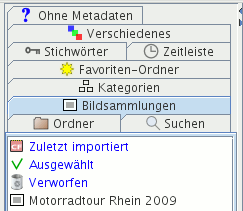

Im Kartenreiter Bildsammlungen können Sie Bildsammlungen auswählen. Eine Bildsammlung ist eine beliebige Auswahl von Bildern, beispielsweise alle Bilder Ihrer letzten Reise, Ihre besten Landschaftsfotos, Fotos, die Sie demnächst ausdrucken wollen. Sie können die Reihenfolge der Bilder in einer Bildsammlung ändern durch Ziehen und Ablegen.

Klicken Sie mit der linken Maustaste auf eine Bildsammlung, werden in der Fenstermitte Vorschaubilder dieser Sammlung angezeigt. Die rechte Maustaste zeigt ein Kontextmenü mit verschiedenen Optionen.